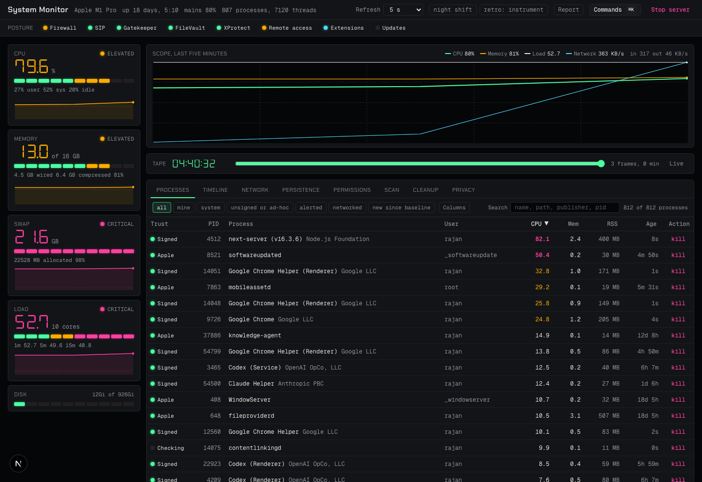
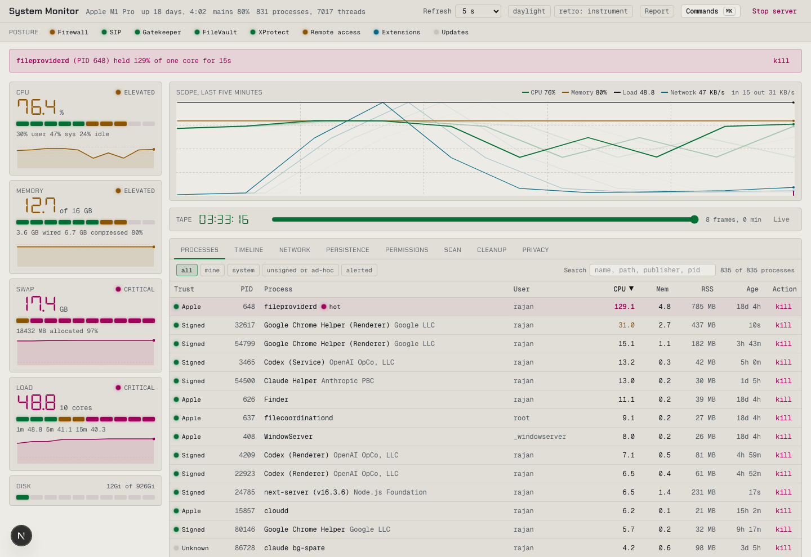

What this covers. Everything built since the localhost audit on 25/09/2026: the build pipeline hardening, the "Phosphor" bench revamp through all five design phases, the constant monitor, and the items a plan audit found still open. Twenty-eight commits, every one passing the full gate (bun run check) locally and in CI.
Where it stands. Every decision taken on 26/09/2026 is built, except three things declined with reasons (section 6). 377 tests across 38 files, an axe accessibility gate on every page in both themes, and a 543-entry process knowledge base. The app runs at bun run dev on native arm64; the Rosetta launcher fix from the audit still applies.
What needs you. Review and merge PR #2; then "Update branch" (or rebase) PR #3, whose only CI failure is GitHub's merge simulation. One observation outside the code: a Supabase MCP server on this Mac is launched with its access token on the command line, where every local process can read it (section 7).


| Step | Delivered | Commit |
|---|---|---|
| 1. Gates that cannot lie | CI runs bun run check, the same command as local. Production audit hard-fails (it had been masked by || true and hid two critical Next advisories; Next 16.3.6 closes them). QA gate fails closed offline. Smoke names the PID holding the Next dev lock. predev preflight refuses to start under Rosetta. | 0605b59 |
| 2. Reproducible CI | Bun pinned through packageManager, SHA-pinned actions, macos-15, concurrency, timeouts, cache, Dependabot. | 0605b59 |
| 3. Route and action tests | Route handlers, server actions and the sampler invoked as functions through seams; a per-file coverage floor of 80% lines and functions (Bun's threshold is per file, verified). | ebb1c3c |
| 4. DOM tests and axe | happy-dom plus Testing Library for hooks and components. bun run a11y runs axe-core in headless Chrome over the DevTools protocol (no Playwright download) against the bench with the inspector open, the mini window and the report, each in both themes; serious or critical violations fail. Its first run found five real defects. | ebb1c3c, 83281fe, 7a63de2 |
| 5. Tooling and strictness | lefthook pre-commit, Prettier, knip (one unused dependency and one dead helper removed); three free TypeScript flags; noUncheckedIndexedAccess as its own stacked PR #3 (138 sites fixed, no non-null assertions). | 624d0fd, PR #3 |
| Phase | Delivered | Commits |
|---|---|---|
| A. Foundation | Every process carries path, parent, age and code-signing identity (Apple, App Store, Developer ID, ad hoc, unsigned), resolved in the background and cached. Phosphor tokens, night shift and daylight, Chakra Petch and DSEG7 self-hosted, retro intensity 0/1/2. Bench layout: vitals rail with seven-segment numerals and LED meters, sortable and filterable trust table, inspector drawer on a spring, workbench tabs, ⌘K palette, keyboard driving. | 3ee2cae, 80beb54, 01efb73 |
| B. Instruments | Eight posture lamps read from the system. Vector scope on canvas with afterglow and a network throughput trace. Sync-loss sweep on a new alert; tube-mode bloom at level 2. | 04c9eda, b142673, 325d132 |
| C. Explainers | Three offline layers: a curated knowledge base (543 entries: macOS daemons and agents, developer tools, browsers, AI assistants and their MCP servers, common apps), Apple's man pages, heuristics. Live detail per process: trace, state, threads, energy, files, connections. Seven investigation actions, suspend before kill. Launch provenance: which launch item, launchd job or parent started it. | 49e63e0, 7075b67, 2f78fc2, 855c8e5, 4eb0a8f |
| D. Monitor | A baseline, drift rules and an append-only timeline; macOS notifications on alarms; Network, Persistence and Permissions views; the mini window. Surfaces: executables by path and trust, destinations, listening ports, launch items by hash, posture, accounts and admins, ~/.ssh, DNS, system extensions, privacy grants, web proxies and PAC, /etc/hosts, crontab and periodic scripts, kernel extensions. The Watch pin reports and notifies when a chosen executable starts or stops. | 1e43c0c, 3655738, 2906f57, 4d07eb0, e084ae7 |
| E. Delight | The tape: rewind the scope and the table through the last hour, by range input or by dragging the scope's time axis and the counter, with a flick that coasts to a frame on a spring. The printout: a 78-column shift report at /report. Split-flap timeline rows. Inspector gestures: swipe to dismiss by velocity sign, drag the edge to resize, a three-stop bottom sheet on narrow windows. | fe40495, 9e1859a, 06c1b7e, e656bb3 |
| Table richness | Connection counts and new-since-baseline per process; networked and new filters; optional Parent, Publisher, Path and Conns columns behind a remembered chooser; Group by app with totals; captions on alerted rows; hints on every heading and vital; digits 1 to 8 pick a tab. | 749d983, 856c3a0 |
| Transport | The sample is pushed over server-sent events at the chosen cadence; the bench reads it with a fetch-based hook that reconnects and shows the last reading as stale meanwhile. The slower panels still poll. | 12e12f7 |
| Measure | Value |
|---|---|
| Commits on the branch since the audit | 28 (plus 1 on PR #3) |
| Tests | 377 in 38 files; every file above the 80% floor |
| Source | about 12,900 lines of TypeScript under src/ |
| Knowledge base | 543 processes |
| Full gate, local | typecheck, lint (zero warnings), format, knip, tests, production audit, build, smoke against next start, axe (8 of 8), smoke against next dev, QA phases 0–4 at 10/10 |
| CI | green on the feature branch; PR #3 fails only in the merge simulation (see section 6) |
~/Library/Application Support/system-monitor, not SQLite: the server runs under Node, where Bun's SQLite is unavailable and Node's is version-gated, and the volumes are tiny. Writes are atomic.launchctl print; same answer, one fewer privileged probe.| Item | Reason | If wanted |
|---|---|---|
| Login items as a persistence surface | sfltool dumpbtm needs root on current macOS; the osascript route prompts for Automation control of System Events, which a background monitor should not trigger. | Run the server with Full Disk Access and read the BTM store, or accept the one-time prompt. |
| Touch-only gestures: row swipe-to-reveal, tab panning, retro knob drag | A desktop instrument; the touch paths add per-row drag listeners to an 800-row table for little use. | Gate them on (pointer: coarse) and add a virtualised table first. |
| Constellation graph | Marked optional in the decisions; nothing yet earns it a place over the process tree in the inspector. | A canvas force layout of parent edges and shared destinations, as a prototype tab. |
| Radar sweep, sudo-log surface, model-backed explainer | Parked, skipped and deferred by the decision log. | — |
PR #3 and the merge simulation.
PR #3 is stacked on the feature branch and carries the branch's later commits by cherry-pick (never a force-push). GitHub's pull-request CI checks a merge of head into base, and there the cherry-picked drift commit and the base's own copy both add parseProxies, so the merged tree declares it twice. The branch itself is green. After PR #2 lands, "Update branch" or a rebase resolves it in one hunk.
While listing running processes for the knowledge base, ps showed a Supabase MCP server started with --access-token and the token as a command-line argument. Anything running as your user can read another process's arguments, so a token passed that way is visible to every app and script on the machine. The knowledge base entry for that server now says so. Moving the token to an environment variable in the MCP configuration closes it; I did not open the configuration file myself.
cd ~/projects/system-monitor git fetch && git checkout worktree-audit-localhost-rosetta bun install bun run check # the whole gate, about five minutes bun run dev # http://127.0.0.1:3000 (native arm64; the launcher fix applies) bun run a11y # axe against the built app (run bun run build first)
In the bench: ⌘K opens the palette; j and k move, i inspects, x asks to terminate, / searches; 1 to 8 pick a tab; drag the scope's time axis to rewind; drag the inspector's header to the right to dismiss it, its left edge to resize.
| Thing | Path |
|---|---|
| Plans | BUILD_IMPROVEMENT_PLAN_2026-09-25.{html,pdf}, docs/design/DESIGN_REVAMP_PLAN_2026-09-25.{html,pdf} |
| This report | docs/REVAMP_DELIVERY_REPORT_2026-09-26.{html,pdf} |
| Pull requests | #2 (the revamp), #3 (strict index access), both drafts against main and the feature branch respectively |
| Monitor state | ~/Library/Application Support/system-monitor (baseline, events, watches; SM_DATA_DIR overrides) |
| Gates | scripts/qa-gate.mjs, scripts/smoke.mjs, scripts/a11y.mjs, scripts/preflight.mjs |